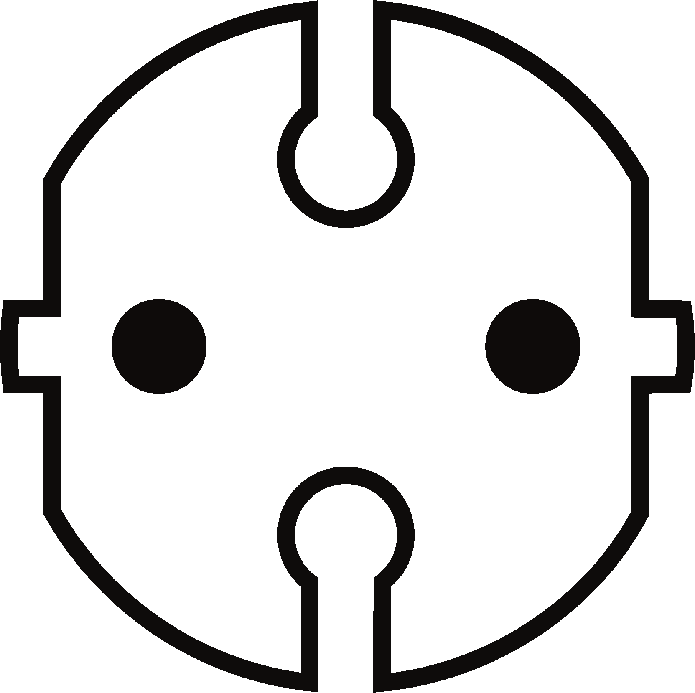

用電安全隨堂考
遊戲介紹
透過 7 道用電安全相關題目，測試玩家對日常用電知識的了解程度。
題目涵蓋插座使用、延長線安全、電器使用及用電意外處理等，讓玩家在遊戲中學習正確的用電觀念。
遊戲規則
- 1. 遊戲總共 7 題，每題答對得 1 分
- 2. 玩家依序回答所有題目
- 3. 完成 7 題後，系統依答對題數判定結果
- 6-7分
- GOOD
- 3-5分
- PASS
- 3分以下
- FAIL
透過 7 道用電安全相關題目，測試玩家對日常用電知識的了解程度。
題目涵蓋插座使用、延長線安全、電器使用及用電意外處理等，讓玩家在遊戲中學習正確的用電觀念。

LOADING
正在為你計算用電安全測驗結果…
0%